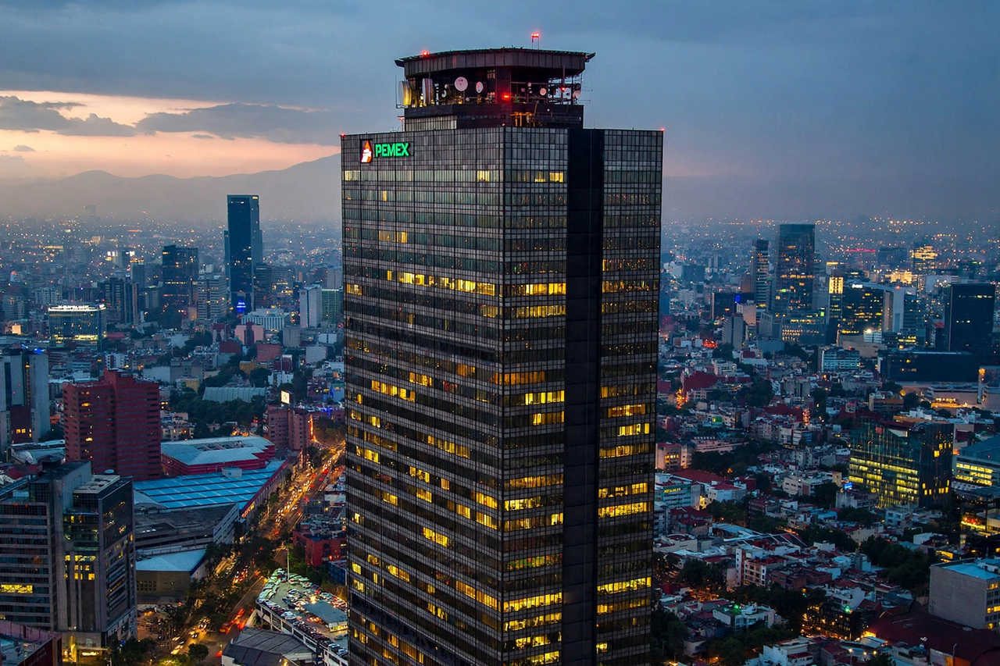

| Type | State-owned enterprise |
|---|---|
| Industry | Oil and gas |
| Founded | June 7, 1938 |
| Headquarters | Mexico City, Mexico |
| Products | Crude oil, natural gas, petrochemicals |
| Owner | Government of Mexico |
| Website | pemex.com |
Petróleos Mexicanos, commonly called Pemex, is the Mexican state-owned petroleum company managed and operated by the Mexican government. It was created on June 7, 1938, after President Lázaro Cárdenas expropriated the assets of foreign oil companies in Mexico on March 18, 1938 — an event commemorated annually as a public holiday (Oil Expropriation Day).
For decades Pemex held a constitutional monopoly over exploration, production, refining, and sale of petroleum in Mexico. Its giant offshore Cantarell field, discovered in 1976 in the Bay of Campeche, made Mexico one of the world's leading oil producers; production peaked in 2004 at about 3.4 million barrels per day and declined thereafter as Cantarell matured. The company's Torre Ejecutiva Pemex skyscraper in Mexico City was the scene of an explosion on January 31, 2013, that killed 37 people.
Energy reforms passed in 2013–2014 under President Enrique Peña Nieto ended Pemex's monopoly and opened the sector to private and foreign investment, although the company retained heavy tax burdens and large debts — by the 2020s it was often described as the world's most indebted oil company, with financial debt around US$100 billion. Subsequent administrations moved to strengthen Pemex's role again and halt further privatization of reserves.
Pemex also operates the Dos Bocas (Olmeca) refinery, inaugurated in 2022, as part of a policy of fuel self-sufficiency.
Categories: Oil and gas companies of Mexico | State-owned enterprises of Mexico | Companies established in 1938